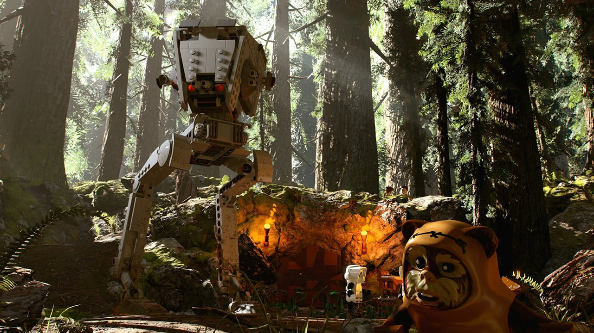
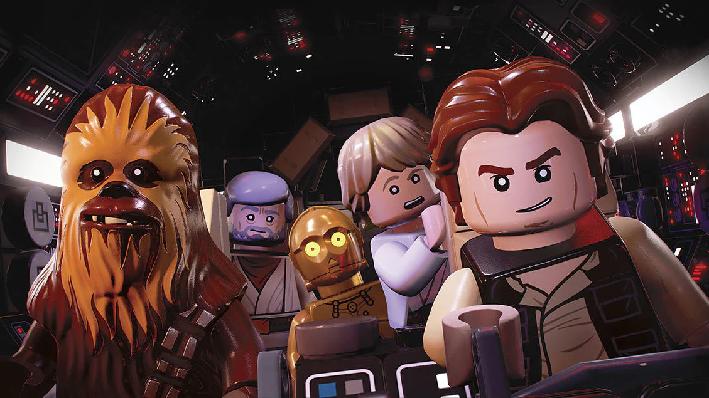
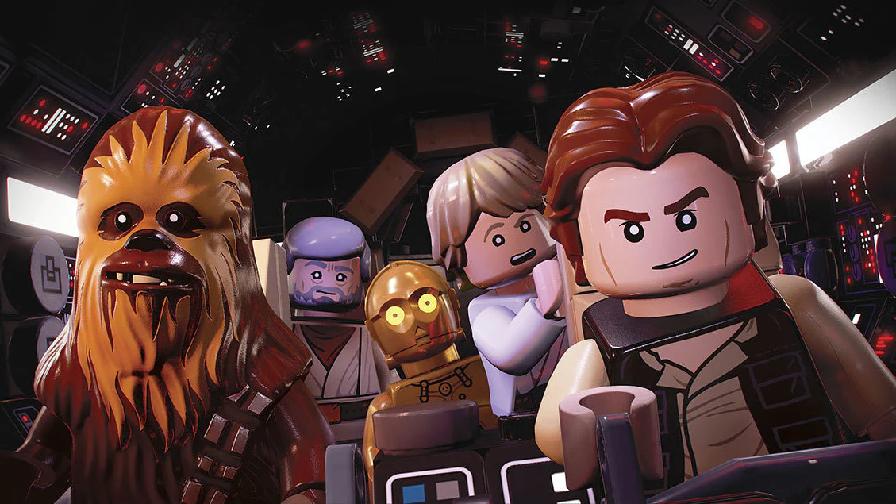

Lego Star Wars: The Skywalker Saga is a 2022 Lego-themed
action-adventure game developed by Traveller's Tales and published by
Warner Bros. Interactive Entertainment. It is the sixth entry in TT
Games' Lego Star Wars series of video games and the successor to 2016's
Lego Star Wars: The Force Awakens. The game adapts all nine entries in
the Skywalker Saga series of films, with additional characters based on
other Star Wars films and television series released as DLC. Unlike most
Lego video games in which players have to advance through the story in a
linear order, players can choose to start the game from any of the three
Skywalker Saga trilogies and complete them in any order they wish. Each
episode contains five main story missions, totaling 45 levels, as
opposed to six levels in previous games. There are also short pre-levels
between the five main levels that advance the story forward but do not
feature collectibles like minikits or True Jedi. Combat has been
revamped from previous titles, such as lightsaber wielders now using a
variety of combos with light attacks, heavy attacks, and Force moves,
and blaster characters having an over-the-shoulder camera. The game
features 380 playable characters, not necessarily restricted to the nine
Skywalker Saga films.
Much like its predecessor, Lego Star Wars: The Force Awakens, the
game's hub is not a single area, such as the Mos Eisley Cantina in
Lego Star Wars: The Complete Saga, but a wide range of fully
explorable planets filled with many iconic Star Wars landmarks.
Planets and moons featured in the game include Naboo, Tatooine,
Coruscant, Kamino, Geonosis, Kashyyyk, Utapau, Mustafar, Yavin 4,
Hoth, Dagobah, Bespin, Endor, Jakku, Takodana, D'Qar, Starkiller Base,
Ahch-To, Cantonica, Crait, Ajan Kloss, Pasaana, Kijimi, Kef Bir, and
Exegol. Many ships have freely explorable areas in the hub as well,
such as Star Destroyers and the Death Star. Random encounters may
occur in the game's hub world. For example, an Imperial Star Destroyer
could suddenly jump out of hyperspace and send a fleet of TIE fighters
after the player. Players can choose to engage in dogfights with them
or continue onward to progress the story.

 
